Click here for the companion R script for this lecture.
Model selection or model comparison is a very common problem in science- that is, we often have multiple competing hypotheses about how our data were generated and we want to see which model is best supported by the available evidence.
If we can describe our data generating process explicitly as a set of deterministic and stochastic components (i.e., likelihood functions), then we can use likelihood-based methods (e.g., LRT, AIC, BIC, WAIC, LOOIC, etc.) to infer which data generating model(s) could most plausibly have generated our observed data.
We will discuss several alternative approaches to model selection in ecology. However, all approaches follow the same basic principle- that – all things equal, we should prefer the simpler model over any more complex alternative. This is known as the ‘principle of parsimony’, or ‘Occam’s razor’.
Bolker uses a study of balsam fir in New York to illustrate model selection. Perhaps it’s time to move on from Myxomatosis anyway…
Let’s load up the data first
# Load the balsam fir dataset
library(ggplot2)
library(emdbook)
data(FirDBHFec)
fir <- na.omit(FirDBHFec[,c("TOTCONES","DBH","WAVE_NON")])
fir$TOTCONES <- round(fir$TOTCONES)
head(fir)## TOTCONES DBH WAVE_NON
## 1 19 9.4 n
## 2 42 10.6 n
## 3 40 7.7 n
## 4 68 10.6 n
## 5 5 8.7 n
## 6 0 10.1 nThe goal of the original study was to test hypotheses about life history evolution, but we will just use it to examine how fecundity (total cones) varies as a function of tree size (DBH):
plot(fir$TOTCONES ~ fir$DBH) # fecundity as a function of tree size (diameter at breast height)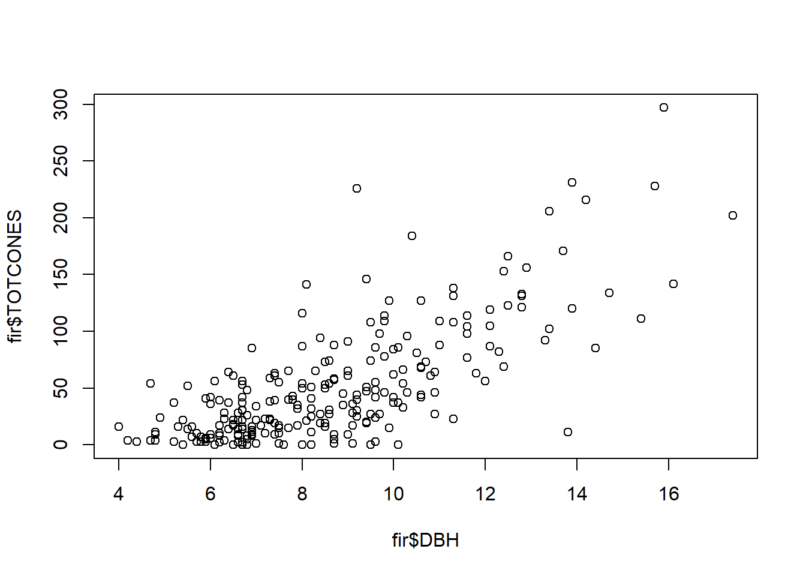
One additional point of complexity in this data set- some trees were sampled from areas undergoing a phenomenon called wave regeneration, in which tree age follows a chronosequence as you move downwind (due to larger trees at the wave front dying due to frost damage, allowing for recruitment of new trees). Other trees were sampled from fir forests in which there was no discernible wave regeneration pattern.
# tree fecundity by size, categorized into two site-level categories: "wave" and "non-wave"
ggplot(fir,aes(DBH,TOTCONES)) + geom_point(aes(colour = WAVE_NON)) + theme_classic()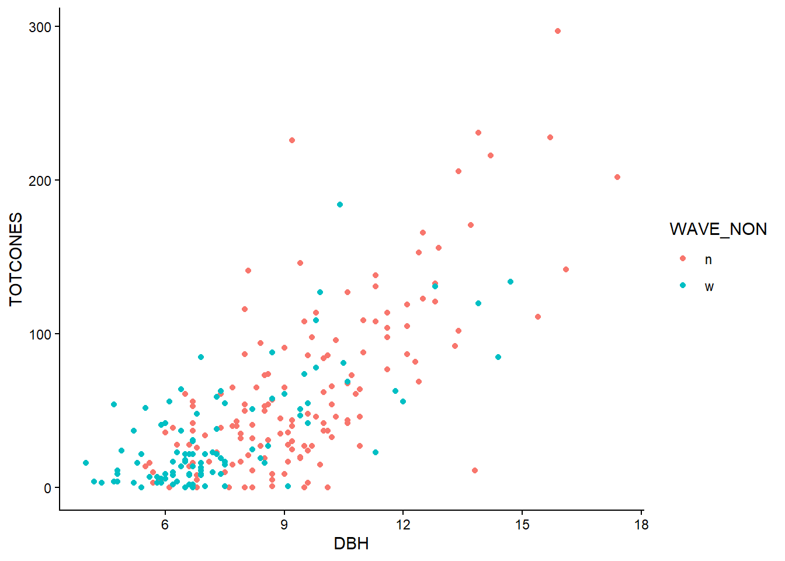
Let’s assume (following Bolker) that fecundity increases as a power-law relationship with DBH:
\[\mu = a\cdot DBH^{b}\]
Let’s also assume that fecundity follows a negative binomial distribution with mean defined by the power law relationship above
\[Y = NegBin(\mu,k)\]
We can model each of these parameters (a, b, and k) separately for trees from wave and non-wave populations.
We can also run simpler models in which some or all of these parameters are modeled as the same for both populations.
Then we can try to address the question: which model is the “best model”?
Here is a likelihood function for the full model – that is, the most complex model (6-dimensional likelihood surface):
# build likelihood function for the full model: CONES ~ negBINOM( a(wave)*DBH^b(wave), dispersion(wave))
NLL_full <- function(params){
wave.code <- as.numeric(fir$WAVE_NON) # convert to ones and twos
a <- c(params[1],params[2])[wave.code] # a parameters (two for wave and one for non-wave)
b <- c(params[3],params[4])[wave.code] # b parameter (two for wave and one for non-wave)
k <- c(params[5],params[6])[wave.code] # over-dispersion parameters (two for wave and one for non-wave)
expcones <- a*fir$DBH^b # expected number of cones (deterministic component)
-sum(dnbinom(fir$TOTCONES,mu=expcones,size=k,log=TRUE)) # add stochastic component: full data likelihood
}
params <- c(a.n=1,a.w=1,b.n=1,b.w=1,k.n=1,k.w=1)
NLL_full(params)## [1] 1762.756We can fit the full model using “optim” (using a gradient based optimization routine), just like we have done before:
## Find the MLE -----------------------
pars = c(a.n=1,a.w=1,b.n=1,b.w=1,k.n=1,k.w=1)
opt_full <- optim(pars,NLL_full,method="BFGS")
MLE_full <- opt_full$par
MinNLL_full <- opt_full$value
MLE_full## a.n a.w b.n b.w k.n k.w
## 0.2886487 0.4093670 2.3536412 2.1473932 1.6542073 1.3247971Let’s run a simpler model now. This time, let’s model the b parameter as equal for wave and nonwave populations:
# build likelihood function for a reduced model: CONES ~ negBINOM( a(wave)*DBH^b, dispersion(wave))
NLL_constb <- function(params){
wave.code <- as.numeric(fir$WAVE_NON) # convert to ones and twos
a <- c(params[1],params[2])[wave.code] # a parameters
b <- params[3] # b parameter (not a function of wave/nonwave)
k <- c(params[4],params[5])[wave.code] # dispersion parameters
expcones <- a*fir$DBH^b
-sum(dnbinom(fir$TOTCONES,mu=expcones,size=k,log=TRUE))
}
params <- c(a.n=1,a.w=1,b=1,k.n=1,k.w=1)
NLL_constb(params)## [1] 1762.756And we can fit the full model using “optim”:
### Find the MLE
opt_constb <- optim(fn=NLL_constb,par=c(a.n=1,a.w=1,b=1,k.n=1,k.w=1),method="BFGS")
MLE_constb = opt_constb$par
MinNLL_constb = opt_constb$value
MLE_constb## a.n a.w b k.n k.w
## 0.3477735 0.3218252 2.2698370 1.6530597 1.3231697Let’s compute -2 times the log likelihood (\(-2*log(likelihood)\)) of the two models at the MLE – That is, we compute \(-2*log(Lik@MLE)\) for each alternative model.
# compute -2*loglik for each model at the MLE
ms_full <- 2*MinNLL_full # this is 2 * min.nll = -2*logLik_at_MLE
ms_constb <- 2*MinNLL_constb
ms_full## [1] 2270.02ms_constb## [1] 2270.267Note here that the log-likelihood of the full model is lower (“better”: that is, the data are more likely to be produced under this model) than the the reduced model. This should always be the case- if not, something is wrong. That is, the plausibility of producing the observed data under a model fitted to those data should always increase when more parameters are added!
This is where the principle of parsimony comes into play! Somehow we need a method that penalizes the complexity of the model, so that we can at least sometimes let the simpler model ‘win’ if it is indeed better supported by the evidence!
One way is to use our old friend, the Likelihood Ratio Test (LRT)!
We have encountered the LRT once before, in the context of generating confidence intervals from likelihood surfaces (in the neighborhood of the MLE). The same principle applies for model selection. The LRT assesses whether the extra goodness-of-fit of the full model is worth the complexity of the additional parameters.
As you recall, the likelihood ratio is defined (obviously) as the ratio of two likelihoods. The numerator represents the likelihood of a reduced model (fewer free parameters) that is nested within a full model – which in turn serves as the denominator:
\[\frac{Likelihood_{reduced}}{Likelihood_{full}}\]
The raw likelihood ratio under the null hypothesis does not have a known distribution. BUT, if we first convert the likelihood ratio to -2X the difference in log likelihoods, we have a statistic that approximately follows a Chi-squared distribution.
\[-2ln(\frac{Likelihood_{reduced}}{Likelihood_{full}})\]
Which can also be written as:
\[-2ln(Likelihood_{reduced}) - -2ln(Likelihood_{full})\]
Which can also be written as:
\[2[ln(Likelihood_{full} - ln(Likelihood_{reduced})]\] that is: 2 times the absolute difference in log likelihood between the full and reduced models. [note that the order of the likelihoods is often reversed because we tend to deal with negative log likelihoods instead of log likelihoods]
When expressed this way, this likelihood ratio statistic (assuming the simpler model is the true model) is asymptotically Chi-squared distributed with df equal to the number of fixed dimensions (difference in free parameters between the full and reduced model). This way, we only reject the simpler model if there is sufficient evidence- that is, when the deviance is much larger than expected under the null model.
The LRT can be used for two-way model comparison as long as one model is nested within the other (full model vs. reduced model). If the models are not nested then the LRT doesn’t really make sense or have theoretical support.
# Likelihood-Ratio test -----------------------
Deviance <- ms_constb - ms_full
Deviance # very small deviance## [1] 0.2467505Chisq.crit <- qchisq(0.95,1)
Chisq.crit## [1] 3.841459Deviance >= Chisq.crit # perform the LRT- don't reject the simpler model## [1] FALSE1-pchisq(Deviance,1) # p-value## [1] 0.6193725# Visualize the likelihood ratio test- compare the observed deviance with the distribution of deviances expected under the null hypothesis
curve(dchisq(x,df=1),0,5)
abline(v=Deviance,col="red",lwd=4)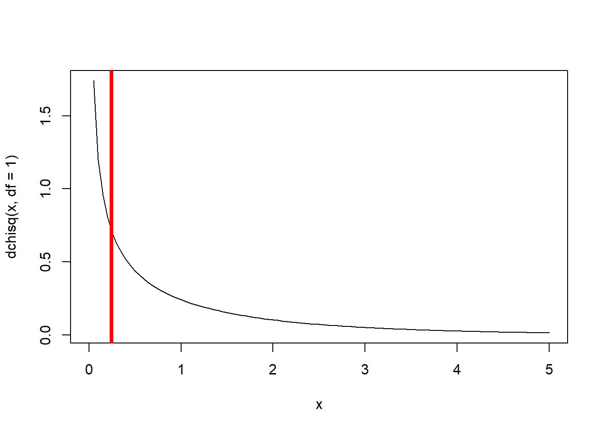
Clearly, the gain in model performance is not worth the extra complexity in this case (the observed deviance could easily be produced by random chance!). Therefore, we favor the reduced model.
What about if we try a different reduced model? This time, we decide to fix the a, b, and k parameters, so the “wave” factor is not considered.
# Try a different reduced model: CONES ~ negBINOM( a*DBH^b, dispersion)
NLL_nowave <- function(params){
a <- params[1] # a parameters
b <- params[2] # b parameter (not a function of wave/nonwave)
k <- params[3] # dispersion parameters
expcones <- a*fir$DBH^b
-sum(dnbinom(fir$TOTCONES,mu=expcones,size=k,log=TRUE))
}
params <- c(a=1,b=1,k=1)
NLL_nowave(params)## [1] 1762.756And we use “optim” to locate the maximum likelihood estimate:
# Find the MLE
opt_nowave <- optim(fn=NLL_nowave,par=params,method="L-BFGS-B")
MLE_nowave = opt_nowave$par
MinNLL_nowave = opt_nowave$value
MLE_nowave## a b k
## 0.3036727 2.3197228 1.5029500Now we can perform a LRT to see which model is better!
# Perform LRT -- this time with three fewer free parameters in the reduced model
ms_full <- 2*MinNLL_full
ms_nowave <- 2*MinNLL_nowave
Deviance <- ms_nowave - ms_full
Deviance## [1] 2.009944Chisq.crit <- qchisq(0.95,df=3) # now three additional params in the more complex model!
Chisq.crit## [1] 7.814728Deviance>=Chisq.crit## [1] FALSE1-pchisq(Deviance,df=3) # p-value## [1] 0.5703454# Visualize the likelihood ratio test (test statistic and sampling distribution under the null)
curve(dchisq(x,df=3),0,15)
abline(v=Deviance,col="red",lwd=4)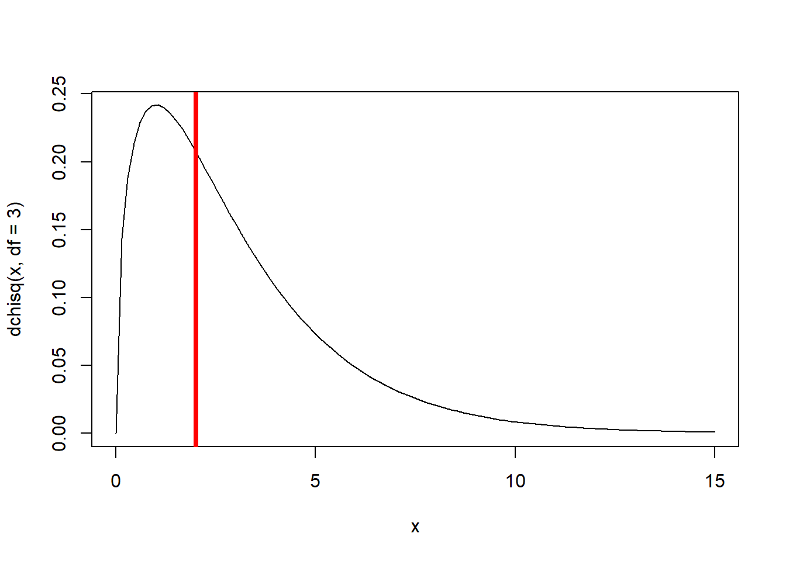
Again, the difference in deviance does not justify the additional parameters. This difference in deviance between the full and restricted model could easily be produced easily by random sampling variation.
Remember this is a frequentist test. The null hypothesis is that there is no difference between the restricted model and the more complex model. So we are imagining multiple alternative universes where we are collecting thousands of datasets under the null hypothesis (simpler model is correct– that is, the extra parameters are junk) and determining a maximum likelihood estimate for the full model (with meaningless free params) and a reduced model where we fix the value of one or more of our junk free parameters at the true parameter value of zero. Even though the data generating process is the same each time, each dataset we collect will yield a slightly different MLE for the full model and the reduced model. The deviance (-2*log likelihood ratio) between the restricted model and the full model (under the null hypothesis) is asymptotically Chi-squared distributed with df = number of dimensions that were “fixed”!
As you can imagine, there are a lot of pairwise comparisons that could be generated, even in this simple example. For instance, there are 15 pairwise comparisons that could be produced from even this simple example. What about more complex models? Clearly this can get a bit unwieldy!
In addition, not all models we wish to compare will necessarily be nested. For example, consider the model selection exercise we were performing in lab- comparing the M-M fit to the Ricker fit. Since these models aren’t nested, there is not clearly a “reduced” and a “full” model and we can’t perform a LRT.
Information-theoretic metrics for model comparison, like the well known Akaike’s Information Criterion (AIC), provide a way to get around the issues with LRT. These metrics allow us to make tables for comparing multiple models simultaneously.
Metrics like AIC represent (theoretically) the relative divergence between your fitted model and the “true” data generating model, even if the ‘true’ model is unknown. Information-theoretic metrics are composed of a negative-log-likelihood component (e.g., \(-2\ell\), in which \(\ell\) is the log likelihood of the fitted model and lower values mean better fit) and a parsimony penalty term (for which lower values mean more parsimony). For AIC, the penalty term is twice the number of parameters (\(2k\)). The models with the lowest values of the information criterion are considered the best model (marrying good fit and parsimony)
NOTE: AIC is still widely used (and misused) so it is important to understand!
AIC is computed using the following very simple equation:
\[AIC = -2 \ell_{max} + 2k\]
\(\ell_{max}\) is the maximum of the log-likelihood surface.
\(k\) is the number of free parameters in the model
As with all information-theoretic metrics, we look for the model associated with the minimum value (lowest value corresponds with best model fit). This is the “best model”, at least among the set of models tested.
For small sample sizes, Burnham and Anderson (2002) recommend that a finite-size correction should be used:
\(AIC_c = AIC + \frac{2k(k+1)}{n-k-1}\)
A common rule of thumb is that models within 2 AIC units (or AICc units) of the best model are “reasonable” (does this “rule of 2” sound familiar?)
Another common I-T metric is the Schwarz, or Bayesian information criterion. The penalty term for BIC is (log n)*k.
\(BIC = -2\ell_{max} + (log(n))\cdot k\)
In general, BIC is more conservative than AIC- that is, more likely to select the simpler model (since the penalty term is generally greater).
Although the Schwarz criterion has a Bayesian justification (as does AIC), it is computed from a point estimate (using the log-likelihood at the MLE) and so it doesn’t pass any real test for being Bayesian – Bayesian analyses don’t treat parameters as points, but as full probability distributions.
Let’s return to the fir fecundity model, and use AIC to select among a set of models. Let’s first fit a couple more candidate models…
This time, we decide to fix the a, and k parameters, so the “wave” factor is only considered for the b parameter.
# Information-theoretic metrics for model-selection ------------------------------
# Akaike's Information Criterion (AIC)
## First, let's build another likelihood function: whereby only the "b" parameter differs by "wave" sites
NLL_constak <- function(params){
wave.code <- as.numeric(fir$WAVE_NON) # convert to ones and twos
a <- params[1] # a parameters
b <- c(params[2],params[3])[wave.code] # b parameter (not a function of wave/nonwave)
k <- params[4] # dispersion parameters
expcones <- a*fir$DBH^b
-sum(dnbinom(fir$TOTCONES,mu=expcones,size=k,log=TRUE))
}
params <- c(a=1,b.n=1,b.w=1,k=1)
NLL_constak(params)## [1] 1762.756And we can fit the full model using “optim”:
### Fit the new model
opt_constak <- optim(fn=NLL_constak,par=params)
MLE_constak= opt_constak$par
MinNLL_constak = opt_constak$value
ms_constak <- 2*MinNLL_constak
MLE_constak## a b.n b.w k
## 0.3448975 2.2745907 2.2327297 1.5057655Finally, let’s fit a model with no “wave” effect, but where we assume the error is Poisson distributed…
### Now, let's build and fit one more final model- this time with no wave effect and a Poisson error distribution
PoisLik_nowave <- function(params){
a <- params[1] # a parameters
b <- params[2] # b parameter (not a function of wave/nonwave)
expcones <- a*fir$DBH^b
-sum(dpois(fir$TOTCONES,lambda=expcones,log=TRUE))
}
params <- c(a=1,b=1)
PoisLik_nowave(params)## [1] 15972.6opt_pois <- optim(fn=PoisLik_nowave,par=params)
MLE_pois= opt_pois$par
MinNLL_pois= opt_pois$value
ms_pois <- 2*MinNLL_pois
MLE_pois## a b
## 0.2613297 2.3883860Note we could not compare the Poisson model to the Negative Binomial model using LRT- one is not nested within the other!
Now we can compare the five models we have run so far using AIC
# Compare all five models using AIC!
AIC_constak <- ms_constak + 2*4
AIC_full <- ms_full + 2*6
AIC_constb <- ms_constb + 2*5
AIC_nowave <- ms_nowave + 2*3
AIC_pois <- ms_pois + 2*2
AICtable <- data.frame(
Model = c("Full","Constant b","Constant a and k","All constant","Poisson"),
AIC = c(AIC_full,AIC_constb,AIC_constak,AIC_nowave,AIC_pois),
LogLik = c(ms_full/-2,ms_constb/-2,ms_constak/-2,ms_nowave/-2,ms_pois/-2),
params = c(6,5,4,3,2),
stringsAsFactors = F
)
AICtable$DeltaAIC <- AICtable$AIC-AICtable$AIC[which.min(AICtable$AIC)]
AICtable$Weights <- round(exp(-0.5*AICtable$DeltaAIC) / sum(exp(-0.5*AICtable$DeltaAIC)),3)
AICtable$AICc <- AICtable$AIC + ((2*AICtable$params)*(AICtable$params+1))/(nrow(fir)-AICtable$params-1)
AICtable[order(AICtable$AIC),c(1,7,2,5,6,4,3)]## Model AICc AIC DeltaAIC Weights params LogLik
## 4 All constant 2278.131 2278.030 0.000000 0.516 3 -1136.015
## 3 Constant a and k 2279.684 2279.515 1.484647 0.246 4 -1135.758
## 2 Constant b 2280.521 2280.267 2.236807 0.169 5 -1135.134
## 1 Full 2282.378 2282.020 3.990054 0.070 6 -1135.010
## 5 Poisson 6327.714 6327.664 4049.633378 0.000 2 -3161.832This AIC table shows us that the simplest model is best! Despite the fact that the deviance is lowest for the full model (principle of parsimony at work)
Can we do model selection in a Bayesian framework? The answer is yes! One elegant metric that is used by Bayesians for model selection is the Bayes Factor (below). The Bayes factor is defined as the ratio of marginal likelihoods of two models. That is- we should prefer the model that is more likely to produce the data, all else being equal.
In addition, there are some I-T metrics for Bayesian analyses that make model selection pretty much as easy as building an AIC table!
Recall that our I-T metrics, as well as likelihood ratio tests, used the value of the likelihood surface at the MLE. That is, we are only taking into account a single point on the likelihood surface to represent what our data have to say about our model.
Bayesians compute a posterior distribution that takes into account the entire likelihood surface (and the prior distribution)– that is, we now are working with an entire posterior distribution rather than just a single point.
The marginal likelihood represents the likelihood averaged across parameter space (where the prior serves to weight this average to emphasize the parts of the parameter space with higher a priori degrees of belief.
\[\overline{\mathcal{L}} = \int P(data|\theta) P(\theta) d \theta\]
The marginal likelihood represents the average fit of a given model structure to the data.
This should look familiar! It is the denominator of the Bayes rule formula – also known as the probability of the data, or the model evidence.
The higher the marginal likelihood, the more likely that model structure is to produce the data.
The ratio of marginal likelihoods is known as the Bayes factor and is an elegant method for comparing models in a Bayesian context.
\[\overline{\mathcal{L}}_1 / \overline{\mathcal{L}}_2\]
This is interpreted as the odds in favor of model 1 versus model 2.
This simple formula penalizes complexity for free. Simpler models will generally have higher marginal likelihoods than more complex models after all of parameter space is taken into account. This is because higher dimensional spaces have more “bad” areas of parameter space and less “good” areas. So while the maximum of the likelihood surface will always be higher in a more complex model, the average of the likelihood surface can be lower for the more complex model (which has additional dimension(s) to average across).
Bayes Factors ‘feel’ like likelihood ratios, but they really are fundamentally different. That is, except in the case where there is no parameter uncertainty, like the medical testing example from earlier in the course (in which case the likelihood ratio and the bayes factor are identical).
In practice, computing marginal likelihoods can be tricky because, well, multi-dimensional integration! Recall that we use MCMC partially to avoid computing the denominator in the Bayes Rule formula. Bayes factors, in contrast, are computed entirely from the denominators of Bayesian parameter estimation problems!
Furthermore, the prior specification can have a huge impact on Bayes factors, which can be unsettling at best and highly misleading at worst!
A simple binomial example can illustrate Bayes factors quite nicely.
Imagine we conduct a tadpole experiment where we are interested in estimating the mortality rate p due to a pesticide, on the basis of the number of dead tadpoles observed out of 10 in a treated tank. We are interested in comparing a simple model where p is fixed at 0.5 (a ‘point null’ model) with a more complex model where p is a free parameter estimated from data. That is, we are testing the hypothesis that p is different from 50%.
First let’s take a look at the simple model.
# Bayes factor example ---------------------
# take a basic binomial distribution with parameter p fixed at 0.5:
probs1 <- dbinom(0:10,10,0.5)
names(probs1) = 0:10
barplot(probs1,ylab="probability")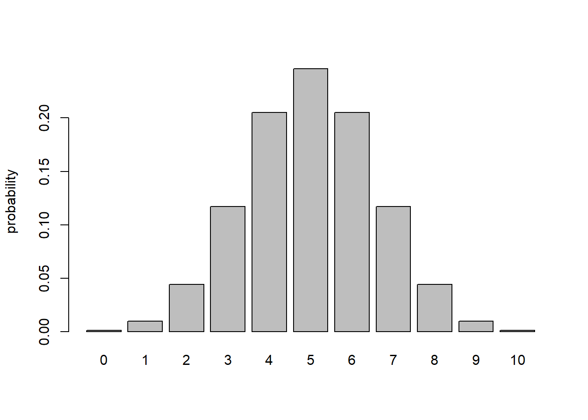
## Q: What is the *marginal likelihood* under this simple model for an observation of 2 mortalities out of 10?
## A:
dbinom(2,10,0.5) # note: there is no parameter uncertainty here, so nothing to integrate or sum across## [1] 0.04394531Q What is the marginal likelihood under this simple model for an observation of 2 mortalities out of 10? How about 3 mortalities?
A It is exactly 0.0439453. That is, there is no marginalizing to do since there is no free parameter to marginalize over.
Now let’s consider a more ‘complex’ model, where p is a free parameter (one additional free parameter relative to the simple model). First, let’s assume that the parameter p is assigned a uniform \(beta(1,1)\) prior across parameter space:
## Now we can consider a model whereby "p" is a free parameter
curve(dbeta(x,1,1)) # uniform prior on "p"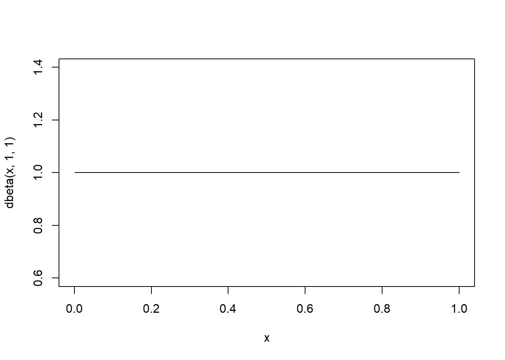
What is the marginal likelihood of observing 2 mortalities under this model?
In other words, what is the average probability of observing 2 mortalities, averaged across all possible values of p???
Intuitively, because all values of p are equally likely, all possible observations (0 mortalities, 2 mortalities, N mortalities) should be equally likely! That is, neither the likelihood function nor the prior distribution favors any particular observation (0 to 10) over any other.
We can do this mathematically…
For two observed mortalities, the marginal likelihood is:
# Compute the marginal likelihood of observing 2 mortalities
# ?integrate
binom2 <- function(x) dbinom(x=2,size=10,prob=x)
marginal_likelihood <- integrate(f=binom2,0,1)$value # use "integrate" function in R
marginal_likelihood # equal to 0.0909 = 1/11## [1] 0.09090909For three observed mortalities, the marginal likelihood (probability of observing a “3” across all possible values of p) is:
# Compute the marginal likelihood of observing 3 mortalities
binom3 <- function(x) dbinom(x=3,size=10,prob=x)
marginal_likelihood <- integrate(f=binom3,0,1)$value # use "integrate" function
marginal_likelihood # equal to 0.0909 = 1/11## [1] 0.09090909Basically, if p could be anything between 0 and 1, no particular observation is favored over any other prior to observing any real data:
# simulate data from the model across all possible values of the parameter "p"
lots=1000000
a_priori_data <- rbinom(lots,10,prob=rbeta(lots,1,1)) # no particular observation is favored
for_hist <- table(a_priori_data)/lots
barplot(for_hist,xlab="Potential Observation",ylab="Marginal likelihood")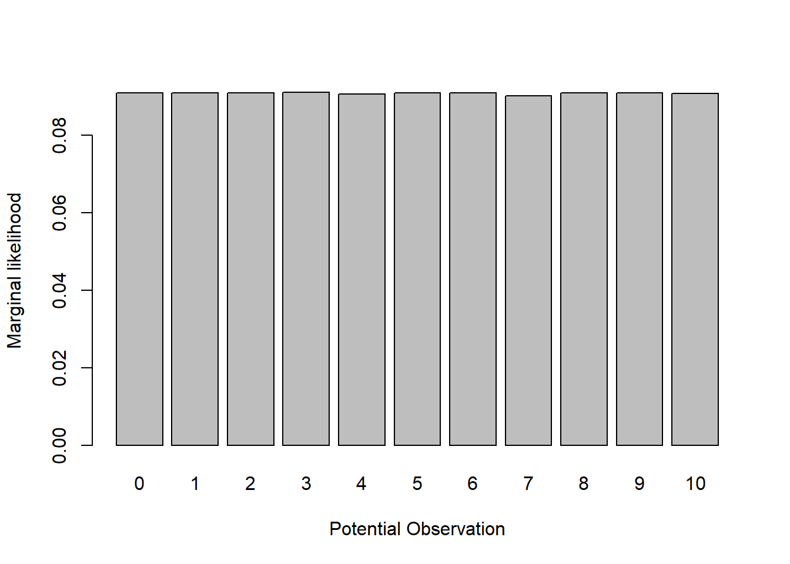
Therefore, since there are 11 possible observations (outcomes of the binomial distribution of size=10), the marginal likelihood of any particular data observation under the model with p as a free parameter should be 1/11 = 0.0909091.
Here is a visualization of the marginal likelihood across all possible data observations:
# Visualize the marginal likelihood of all possible observations
probs2 <- rep(1/11,times=11)
names(probs2) = 0:10
barplot(probs2,ylab="probability",ylim=c(0,1))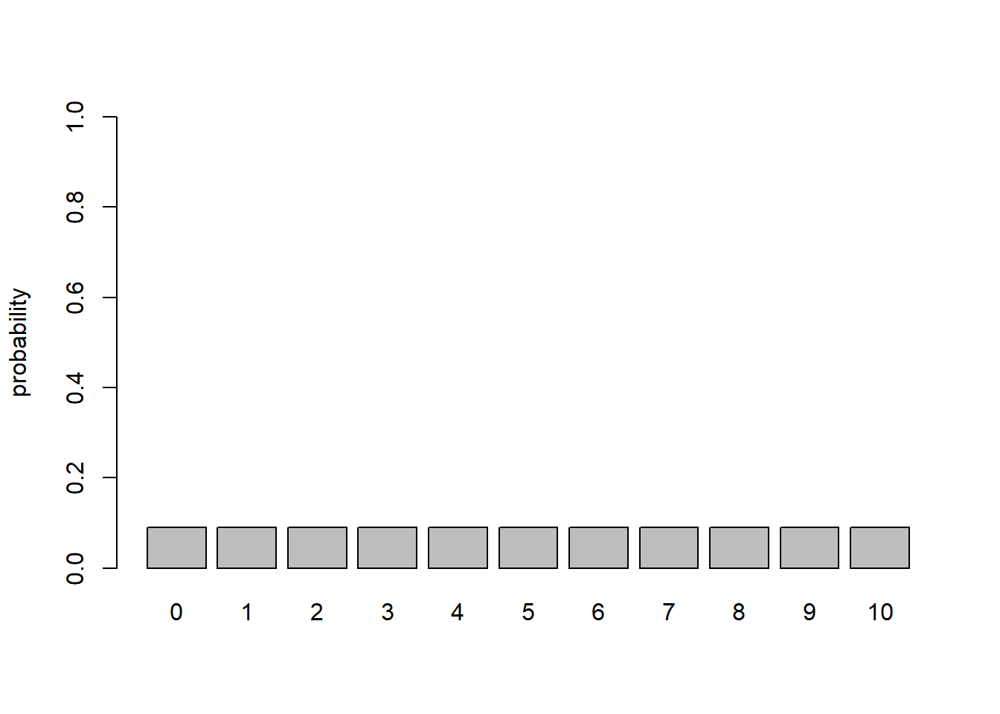
Now let’s overlay the marginal likelihoods for the simpler model (which really isn’t ‘marginalized’ across anything since there are zero free parameters):
# Overlay the marginal likelihood of the simpler model, with p fixed at 0.5
probs2 <- rep(1/11,times=11)
names(probs2) = 0:10
barplot(probs2,ylab="probability",ylim=c(0,1))
probs1 <- dbinom(0:10,10,0.5)
names(probs1) = 0:10
barplot(probs1,ylab="probability",add=T,col="red",density=20)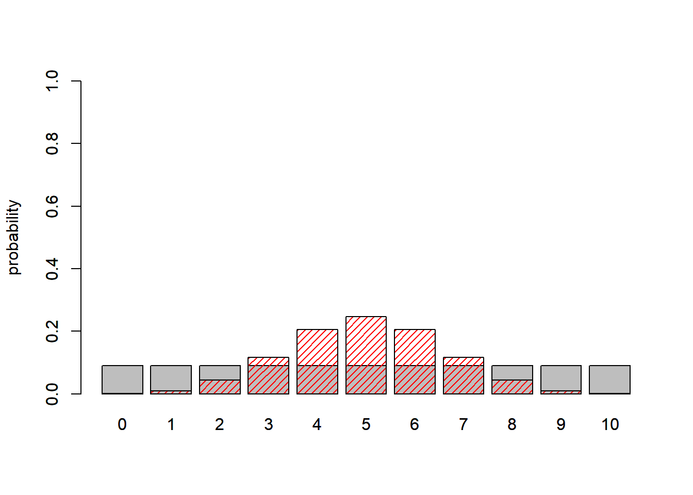
Assuming we observed 2 mortalities, what is the Bayes Factor? Which model is better?
# Finally, compute the bayes factor given that we observed 2 mortalities. Which model is better?
probs2 <- rep(1/11,times=11)
names(probs2) = 0:10
barplot(probs2,ylab="probability",ylim=c(0,1))
probs1 <- dbinom(0:10,10,0.5)
names(probs1) = 0:10
barplot(probs1,ylab="probability",add=T,col="red",density=20)
abline(v=3,col="green",lwd=4 )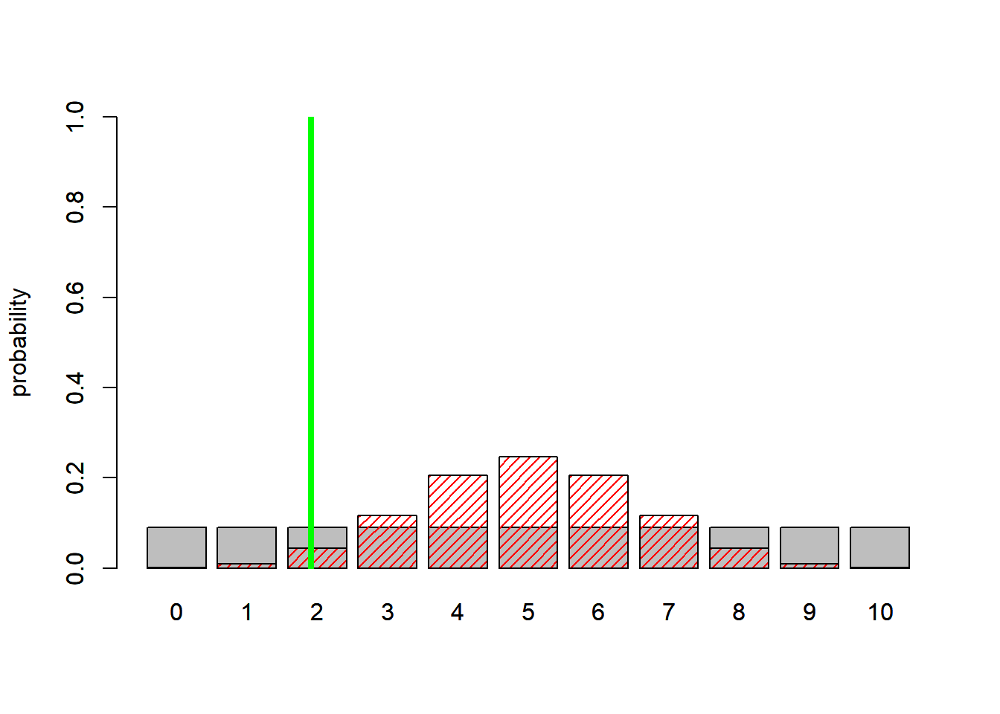
BayesFactor = (1/11)/dbinom(2,10,0.5)
BayesFactor## [1] 2.068687Here, the Bayes factor of around 2 indicates that the data lend support to the more complex model!
What if the data instead were 3 mortalities? Which model is the best model?
# Compute the bayes factor given that we observed 3 mortalities. Which model is better now?
probs2 <- rep(1/11,times=11)
names(probs2) = 0:10
barplot(probs2,ylab="probability",ylim=c(0,1))
probs1 <- dbinom(0:10,10,0.5)
names(probs1) = 0:10
barplot(probs1,ylab="probability",add=T,col="red",density=20)
abline(v=4.3,col="green",lwd=4 )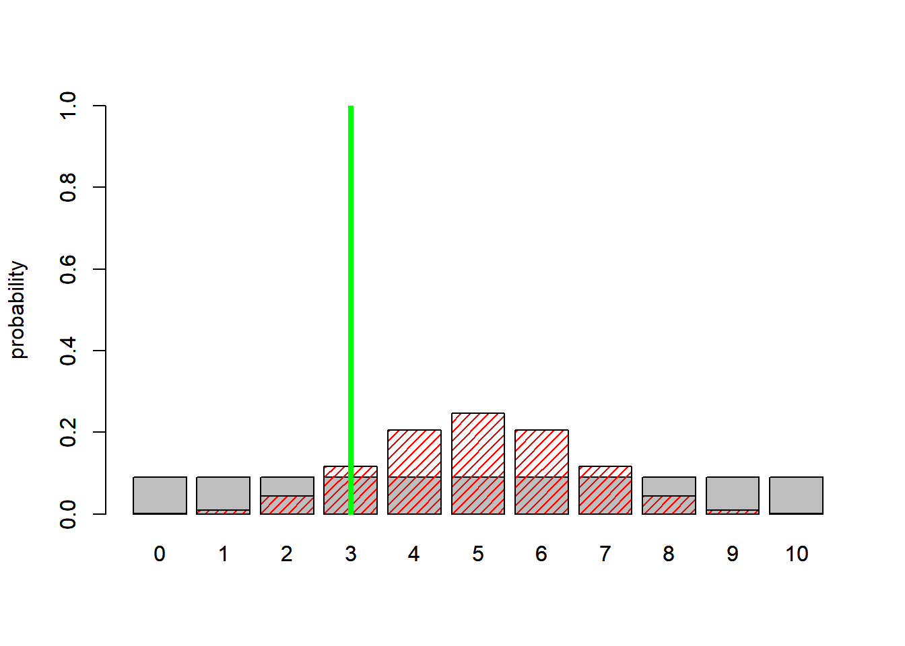
BayesFactor = dbinom(3,10,0.5)/(1/11)
BayesFactor## [1] 1.289063This time, The simpler model wins!!! That would never happen if we compared maximum likelihood estimates- the likelihood of the (fitted) more complex model will always be (equal or) lower (i.e., the likelihood of three successes at p=0.3 is higher than the likelihood of three successes at p=0.5)! That’s why we have to penalize or regularize more complex models to put them on a level playing field with the simpler models.
We can visualize this! First of all, what is the maximum likelihood estimate for p under the model with 3 mortality observations?
# Visualize the likelihood ratio
# probs2 <- rep(1/11,times=11)
# names(probs2) = 0:10
# barplot(probs2,ylab="probability",ylim=c(0,1))
probs1 <- dbinom(0:10,10,0.5)
names(probs1) = 0:10
barplot(probs1,ylab="probability",col="red",density=20,ylim=c(0,1))
probs3 <- dbinom(0:10,10,0.3)
names(probs3) = 0:10
barplot(probs3,ylab="probability",add=T,col="green",density=10,angle = -25)
abline(v=4.3,col="green",lwd=4 )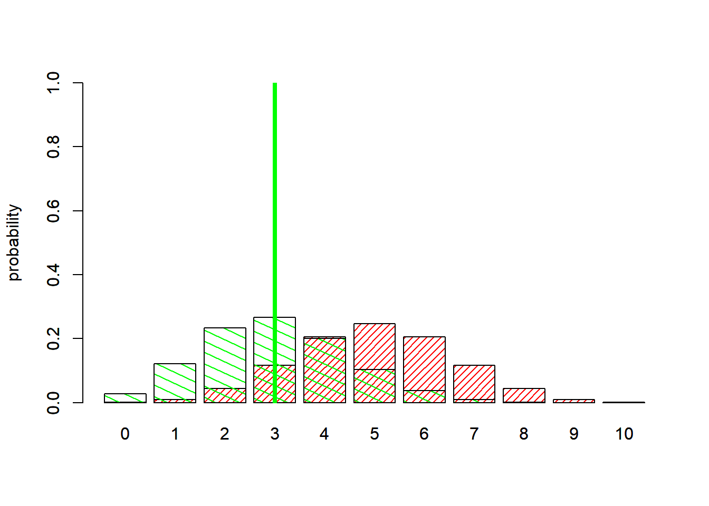
So clearly the raw likelihood ratio favors the more complex model (fitted parameter “p”) vs the simple, 0-parameter model!
What does the likelihood-ratio test have to say though?
# LRT: simple model (p fixed at 0.5) vs complex model (p is free parameter)
Likelihood_simple <- dbinom(3,10,0.5)
Likelihood_complex <- dbinom(3,10,0.3)
Likelihood_simple## [1] 0.1171875Likelihood_complex## [1] 0.2668279-2*log(Likelihood_simple)--2*log(Likelihood_complex)## [1] 1.645658qchisq(0.95,1)## [1] 3.841459pchisq(1.64,1) # very high p value, simpler model is preferred## [1] 0.7996745What about AIC?
# AIC: simple model (p fixed at 0.5) vs complex model (p is free parameter)
AIC_simple <- -2*log(Likelihood_simple) + 2*0
AIC_complex <- -2*log(Likelihood_complex) + 2*1
AIC_simple## [1] 4.28796AIC_complex ## [1] 4.642303What about AICc?
\(AIC_c = AIC + \frac{2k(k+1)}{n-k-1}\)
### Alternatively, use AICc
AICc_simple <- -2*log(Likelihood_simple) + 0 + 0
AICc_complex <- -2*log(Likelihood_complex) + 1 + ((2*2)/(3-1-1))
AICc_simple## [1] 4.28796AICc_complex ## [1] 7.642303What about BIC?
# Alternatively, try BIC
BIC_simple <- -2*log(Likelihood_simple) + log(10)*0
BIC_complex <- -2*log(Likelihood_complex) + log(10)*1
BIC_simple## [1] 4.28796BIC_complex ## [1] 4.944888All these methods give the same basic answer- that the simple model is better, even though the complex model fits better!
The first widely used, fully Bayesian I-T criterion was called Deviance Information Criterion, or DIC (which was the butt of many statistician jokes back in the day).
Deviance Information Criterion is computed by default in JAGS and WinBUGS. It is analogous to other I-T metrics like AIC (and therefore easy to interpret and use)!
However, DIC has been largely superseded by other I-T criterion for MCMC-fitted Bayesian models: these are WAIC and LOOIC. We will compute these using stan.
The WAIC criterion (also known as the Wattanabe-Akaike information criterion, or the ‘widely applicable information criterion’) metric is also interpretable just like AIC, BIC and DIC and allows us to compare models fitted in a Bayesian framework via MCMC:
\[WAIC = -2(lppd - P_{WAIC})\],
\[lppd = \sum_i log \int_\theta P(y_i|\theta)P(\theta | y)d\theta\],
where the integral is approximated by averaging across the posterior distribution of the likelihood of each data point. Therefore we need to monitor or compute the likelihood of each data point in our MCMC model fitting algorithm.
\[P_{WAIC} = \sum_i Var[log(P(y_i|\theta_{post})]\]
P_WAIC is a penalty term, and is often referred to as the effective number of parameters. Less complex models are more constrained (less flexible) and that will correspond with less variability in the likelihood of each data point across MCMC samples. More complex models are more flexible/variable and therefore will have a greater penalty.
Finally, the WAIC metric has largely been superseded by the ‘loo’ methods, including LOO-CV and LOOIC. LOOIC is often indistinguishable from WAIC:
\[LOOIC = -2\sum_i log \int_\theta P(y_i|\theta)P(\theta_{-y_i})d\theta\] Notice that in its pure form you need to re-compute the model N times, each time leaving out one data point. This is impractical. So, in practice, we use a technique called Pareto-smoothed importance sampling (PSIS). In PSIS, we use creative weighted averaging to approximate the cross validation. More surprising (less likely) observations are assigned more weight than less surprising observations.
One advantage of these methods is that they provide additional model fit diagnostics based on (PSIS), like the Pareto K statistic. If the pareto-k statistic is less than 0.7, the PSIS method should provide a good approximation of the LOO score. If pareto-k is greater than 0.7, then the PSIS approximation may be unreliable due to highly influential observations in your dataset.
When used to compute the approximate leave-one-out cross validation metric, this technique is known as PSIS-LOO.
First, let’s write a ‘stan’ model for the fir data:
data {
int<lower = 1> N;
array [N] int<lower=0> obs_cones;
vector<lower=0> [N] DBH;
array [N] int<lower=1,upper=2> wave_ndx;
}
parameters {
vector[2] loga, b, logbeta;
}
transformed parameters {
vector[2] a = exp(loga);
vector[2] beta = exp(logbeta);
}
model {
vector[N] mean_cones = a[wave_ndx] .* DBH .^ b[wave_ndx]; // power function: a*DBH^b
vector[N] alpha = mean_cones .* beta[wave_ndx];
obs_cones ~ neg_binomial(alpha,beta[wave_ndx]);
}
generated quantities { // need log_lik of each data point for model selection
vector[N] log_lik; // N is the number of data points
{
real m2, a2;
for (n in 1:N) {
m2 = a[wave_ndx[n]] * DBH[n]^b[wave_ndx[n]]; // power function: a*DBH^b
a2 = m2 * beta[wave_ndx[n]];
log_lik[n] = neg_binomial_lpmf(obs_cones[n] | a2, beta[wave_ndx[n]]);
}
}
}
Then we need to package the data for stan
# Package the data for stan
stan_data <- list(
N = nrow(fir),
obs_cones = fir$TOTCONES,
wave_ndx = as.numeric(fir$WAVE_NON),
DBH = fir$DBH
)
#data.packageThen we can run the model!
# Run the model in stan
library(cmdstanr) # load packages
library(bayesplot)
library(posterior)
options(mc.cores = 4)
# compile the model using:
firmodel_full <- cmdstan_model("firmodel_full.stan") # Compile stan model
fit_full <- suppressMessages( firmodel_full$sample(
data = stan_data,
chains = 4,
iter_warmup = 500,
iter_sampling = 500,
refresh = 0
) )## Running MCMC with 4 parallel chains...
##
## Chain 3 finished in 2.8 seconds.
## Chain 1 finished in 2.9 seconds.
## Chain 4 finished in 2.9 seconds.
## Chain 2 finished in 3.2 seconds.
##
## All 4 chains finished successfully.
## Mean chain execution time: 3.0 seconds.
## Total execution time: 3.4 seconds.# fit_full$summary()
samples <- fit_full$draws(format="draws_df")
bayesplot::mcmc_trace(samples,"a[1]")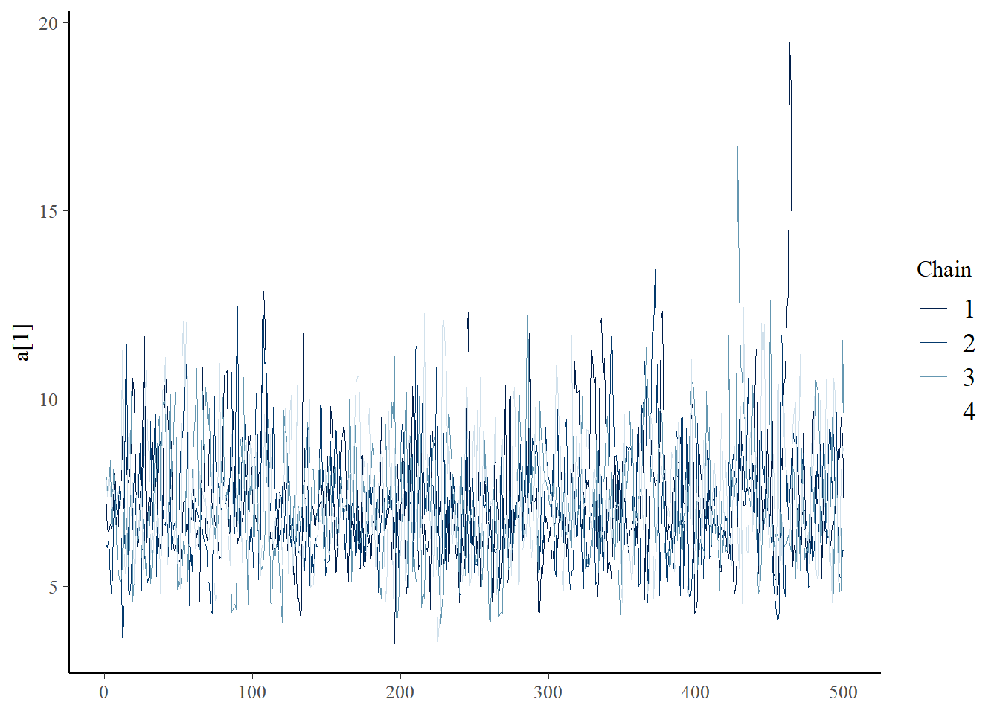
bayesplot::mcmc_trace(samples,"b[2]")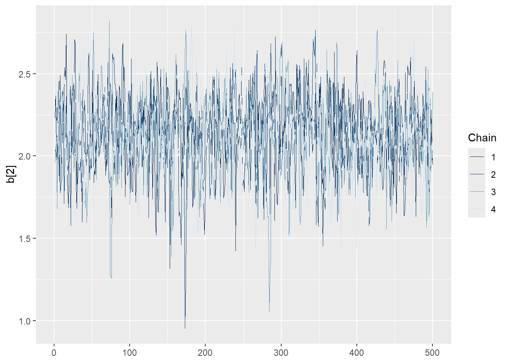
bayesplot::mcmc_trace(samples,"beta[1]")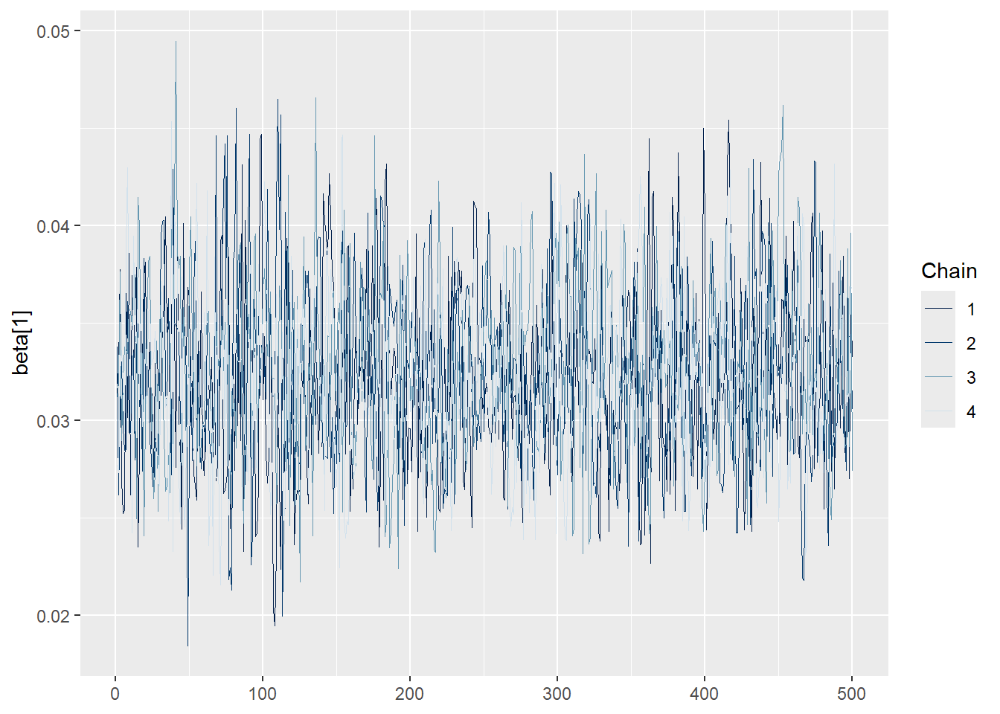
First of all, is there any evidence that the mean reproduction from wave sites is different than that of the non-wave sites?
meanrep_wave = exp(samples$`loga[2]`) * mean(stan_data$DBH) ^ samples$`b[2]`
meanrep_nonwave = exp(samples$`loga[1]`) * mean(stan_data$DBH) ^ samples$`b[1]`
hist(meanrep_nonwave,ylab="Prob Density",xlab="number of cones",freq = F,xlim=c(25,60),ylim=c(0,0.15),main="")
hist(meanrep_wave,density=20,col="darkgreen",add=T,freq=F)
legend("topleft",col=c("darkgreen","white"),density=c(20,0),legend=c("wave","nonwave"),bty="n")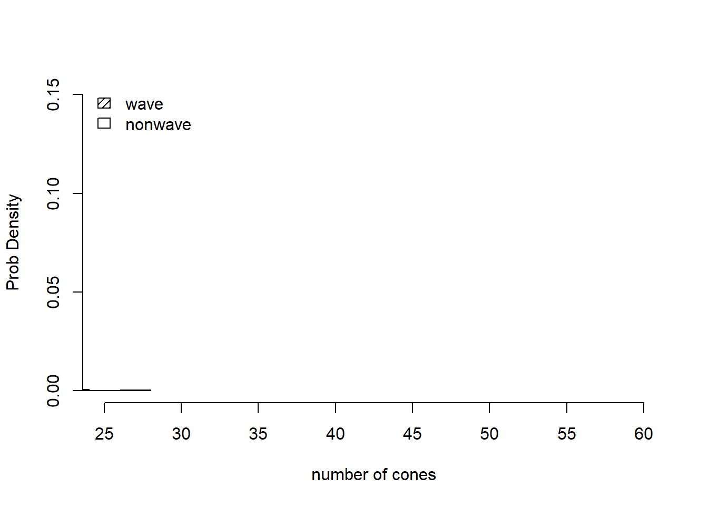
We can use the ‘loo’ package to compute WAIC for this model
# Extract the WAIC for the full model!
library(loo)
loglik_names <- sapply (1:stan_data$N,
function(t) sprintf("log_lik[%s]",t) )
lls = as.matrix(samples)[,loglik_names]
waic_full = loo::waic(lls)
waic_full$estimates["waic",]## Estimate SE
## 2265.65185 30.71972Notice that unlike AIC, we not only get a point estimate for WAIC but we also get a standard error, indicating how sure we are!
An even easier (and probably better) method is to use the LOOIC metric with pareto smoothed importance sampling (PSIS). This is because this method provides additional useful diagnostics. Generally WAIC and LOO-CV/LOOIC will give similar results.
loo_full <- fit_full$loo()
loo_full##
## Computed from 2000 by 242 log-likelihood matrix.
##
## Estimate SE
## elpd_loo -1132.9 15.4
## p_loo 7.2 1.3
## looic 2265.7 30.7
## ------
## MCSE of elpd_loo is 0.1.
## MCSE and ESS estimates assume MCMC draws (r_eff in [0.6, 1.0]).
##
## All Pareto k estimates are good (k < 0.7).
## See help('pareto-k-diagnostic') for details.Notice that the LOOIC and WAIC values are nearly identical.
Now let’s build the reduced model and compare LOOIC values!
data {
int<lower = 1> N;
array [N] int<lower=0> obs_cones;
vector<lower=0> [N] DBH;
}
parameters {
real loga, b, logbeta;
}
transformed parameters {
real a = exp(loga);
real beta = exp(logbeta);
}
model {
vector[N] mean_cones = a .* DBH .^ b; // power function: a*DBH^b
vector[N] alpha = mean_cones .* beta;
obs_cones ~ neg_binomial(alpha,beta);
}
generated quantities { // need log_lik of each data point for model selection
vector[N] log_lik; // N is the number of data points
{
real m2, a2;
for (n in 1:N) {
m2 = a * DBH[n]^b; // power function: a*DBH^b
a2 = m2 * beta;
log_lik[n] = neg_binomial_lpmf(obs_cones[n] | a2, beta);
}
}
}
Then we can run the model!
# compile the model using:
firmodel_reduced <- cmdstan_model("firmodel_reduced.stan") # Compile stan model
fit_reduced <- suppressMessages( firmodel_reduced$sample(
data = stan_data,
chains = 4,
iter_warmup = 500,
iter_sampling = 500,
refresh = 0
) )## Running MCMC with 4 parallel chains...
##
## Chain 1 finished in 1.4 seconds.
## Chain 2 finished in 1.3 seconds.
## Chain 3 finished in 1.5 seconds.
## Chain 4 finished in 1.4 seconds.
##
## All 4 chains finished successfully.
## Mean chain execution time: 1.4 seconds.
## Total execution time: 1.6 seconds.# fit_full$summary()
samples_red <- fit_reduced$draws(format="draws_df")
bayesplot::mcmc_trace(samples_red,"a")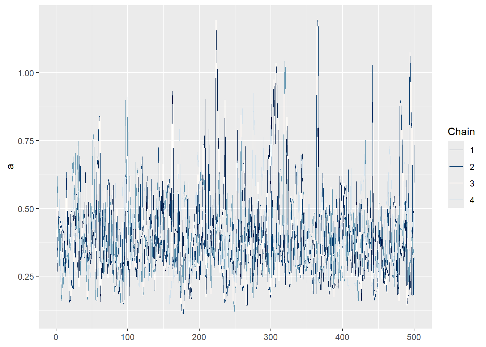
# bayesplot::mcmc_trace(samples_red,"b")
# bayesplot::mcmc_trace(samples_red,"beta")What is the LOOIC for this model?
# Compute LOOIC
loo_reduced <- fit_reduced$loo()
loo_reduced##
## Computed from 2000 by 242 log-likelihood matrix.
##
## Estimate SE
## elpd_loo -1131.4 15.4
## p_loo 3.9 0.9
## looic 2262.9 30.9
## ------
## MCSE of elpd_loo is 0.1.
## MCSE and ESS estimates assume MCMC draws (r_eff in [0.2, 1.2]).
##
## All Pareto k estimates are good (k < 0.7).
## See help('pareto-k-diagnostic') for details.Is there a good reason to prefer the full model now?
Another cool, sometimes useful, method of Bayesian model selection is to write the model selection directly into the MCMC algorithm! This technique, known as reversible jump MCMC (RJMCMC), can be a particularly elegant way to do model selection. However, this method is not compatible with HMC, so it is currently not possible to do RJMCMC in stan.
Here is an example of how to do this in the BUGS language (e.g., that could be run in JAGS or NIMBLE).
model {
### Likelihood for model 1: full
for(i in 1:n.obs){
expected.cones[i,1] <- a1[wave[i]]*pow(DBH[i],b1[wave[i]]) # a*DBH^b
spread.cones[i,1] <- r1[wave[i]]
p[i,1] <- spread.cones[i,1] / (spread.cones[i,1] + expected.cones[i,1])
observed.cones[i,1] ~ dnegbin(p[i,1],spread.cones[i,1])
predicted.cones[i,1] ~ dnegbin(p[i,1],spread.cones[i,1])
SE_obs[i,1] <- pow(observed.cones[i,1]-expected.cones[i,1],2)
SE_pred[i,1] <- pow(predicted.cones[i,1]-expected.cones[i,1],2)
}
### Priors, model 1
for(j in 1:2){ # estimate separately for wave and non-wave
a1[j] ~ dunif(0.001,2)
b1[j] ~ dunif(0.5,4)
r1[j] ~ dunif(0.5,5)
}
### Likelihood for model 2: reduced
for(i in 1:n.obs){
expected.cones[i,2] <- a2*pow(DBH[i],b2) # a*DBH^b
spread.cones[i,2] <- r2
p[i,2] <- spread.cones[i,2] / (spread.cones[i,2] + expected.cones[i,2])
observed.cones[i,2] ~ dnegbin(p[i,2],spread.cones[i,2])
predicted.cones[i,2] ~ dnegbin(p[i,2],spread.cones[i,2])
SE_obs[i,2] <- pow(observed.cones[i,2]-expected.cones[i,2],2)
SE_pred[i,2] <- pow(predicted.cones[i,2]-expected.cones[i,2],2)
}
### Priors, model 2
a2 ~ dunif(0.001,2)
b2 ~ dunif(0.5,4)
r2 ~ dunif(0.5,5)
### Likelihood for model 3: constant a and b
for(i in 1:n.obs){
expected.cones[i,3] <- a3*pow(DBH[i],b3) # a*DBH^b
spread.cones[i,3] <- r3[wave[i]]
p[i,3] <- spread.cones[i,3] / (spread.cones[i,3] + expected.cones[i,3])
observed.cones[i,3] ~ dnegbin(p[i,3],spread.cones[i,3])
predicted.cones[i,3] ~ dnegbin(p[i,3],spread.cones[i,3])
SE_obs[i,3] <- pow(observed.cones[i,3]-expected.cones[i,3],2)
SE_pred[i,3] <- pow(predicted.cones[i,3]-expected.cones[i,3],2)
}
SSE_obs[1] <- sum(SE_obs[,1])
SSE_pred[1] <- sum(SE_pred[,1])
SSE_obs[2] <- sum(SE_obs[,2])
SSE_pred[2] <- sum(SE_pred[,2])
SSE_obs[3] <- sum(SE_obs[,3])
SSE_pred[3] <- sum(SE_pred[,3])
### Priors, model 3
for(j in 1:2){ # estimate separately for wave and non-wave
r3[j] ~ dunif(0.5,5)
}
a3 ~ dunif(0.001,2)
b3 ~ dunif(0.5,4)
#####################
### SELECT THE BEST MODEL!!!
#####################
for(i in 1:n.obs){
observed.cones2[i] ~ dnegbin(p[i,selected],spread.cones[i,selected])
predicted.cones2[i] ~ dnegbin(p[i,selected],spread.cones[i,selected]) # for posterior predictive check!
SE2_obs[i] <- pow(observed.cones2[i]-expected.cones[i,selected],2)
SE2_pred[i] <- pow(predicted.cones2[i]-expected.cones[i,selected],2)
}
SSE2_obs <- sum(SE2_obs[])
SSE2_pred <- sum(SE2_pred[])
### Priors
# model selection...
prior[1] <- 1/3
prior[2] <- 1/3 # you can put substantially more weight because fewer parameters (there are more rigorous ways to do this!!)
prior[3] <- 1/3
selected ~ dcat(prior[])
}
Now we can look at model fit! We will use the same method we used in lab- the posterior predictive check…
We can write a for loop to extract the prediction results for each model (and for the model-averaged model):
First let’s just look at the model predictions vs the observed data. First, model 1
# Goodness of fit
N <- stan_data$N
plot(fir$TOTCONES~fir$DBH,ylim=c(0,900),cex=2)
# which.max(stan_data$DBH)
# which.min(stan_data$DBH)
a_param <- samples_red$a
b_param <- samples_red$b
beta_param <- samples_red$beta
mu_rep <- sapply(1:N,function(t) a_param * stan_data$DBH[t]^b_param)
sim_dat <- function(s){
thismean = mu_rep[s,]
thisbeta <- samples_red$beta[s]
thisalpha <- thismean * thisbeta
thismu = thisalpha / thisbeta
rnbinom(N,size=thisalpha,mu=thismu)
}
nMCMC = length(samples_red$b)
for(d in 1:N){
dat= sim_dat(sample(1:nMCMC,1))
points(stan_data$DBH,dat,pch=20,col="gray",cex=0.4)
}
points(fir$DBH,fir$TOTCONES,cex=2)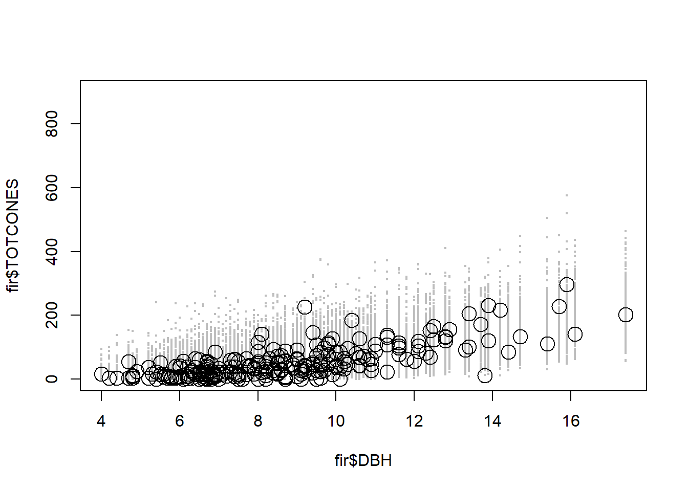
Let’s run a Bayesian p-value check for the reduced model:
# Posterior Predictive Checks!
nreps = 500
SSE_obs= numeric(nreps)
SSE_sim = numeric(nreps)
r=1
for(r in 1:nreps){
this= sample(1:nMCMC,1,replace = T)
SSE_obs[r] = sum((stan_data$obs_cones - mu_rep[this,])^2)
simdat = sim_dat(this)
SSE_sim[r] = sum((simdat - mu_rep[this,])^2)
}
plot(SSE_sim~SSE_obs,xlab="SSE, real data",ylab="SSE, simulated data",main="Posterior Predictive Check")
abline(0,1,col="red")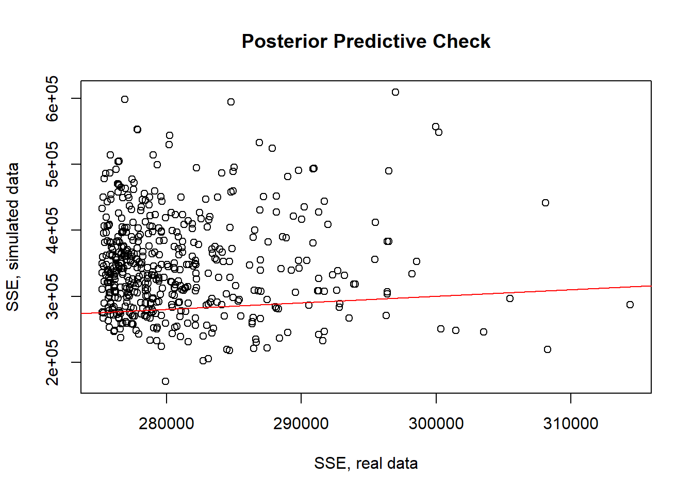
p.value=mean(SSE_sim>SSE_obs)
p.value ## [1] 0Interesting- the model seems to not fit very well! It’s possible I made a coding error somewhere, so if I were doing this analysis for real, I would triple check everything. If this result holds I might try to find a better model specification!
Okay, one more topic before we end:
The fact that model selection is such a big deal in ecology and environmental science indicates that we are rarely certain about which model is the best model. Even after constructing an AIC table we may be very unsure about which model is the “true” model.
The AIC weights tell us in essence how much we “believe” in each model. This is a very Bayesian interpretation, and in general model averaging really is best thought of in a Bayesian context.
One way to do model averaging relies on AIC weights. Basically we take the set of predictions from each model independently and weight them by the Akaike weight. There is a literature on this and R packages for helping (see package ‘AICcmodavg’)
Really never in my opinion- model averaging can be useful for prediction but not useful (even misleading) if you are trying to estimate effect sizes! The reason for this is that due to multicollinearity, the meaning of parameters can change depending on which other parameters are in the model. For more info see this paper by Brian Cade: https://esajournals.onlinelibrary.wiley.com/doi/full/10.1890/14-1639.1.
In machine learning and statistics, many methods have a tendency to over-learn the data- that is, to “learn” random noise and interpret it as a true signal. Regularization allows us to penalize complexity in our models, which makes our models skeptical of increased complexity. Essentially regularization raises the bar for determining whether or not to make a model more complex. The complexity penalties in AIC and BIC are examples of regularization in this sense.
In many classical and machine learning methods, we simply add a term to our likelihood function that penalizes complexity, which forces our optimizers to choose simpler models unless the data strongly support adding more complexity.
In Bayesian models, we can bake this skepticism right into our priors. For example, we can make all our priors on regression coefficients centered on zero, and with most prior weight in the neighborhood of zero. In the absence of strong information in the data, our model will assume that the coefficient is around zero.
It is often difficult to estimate the penalty parameters, so one common technique is to fit the model with a range of penalty terms and use cross validation to determine the appropriate penalty term to use.
If we have time, and there is interest, we can try a worked example of this technique in class or lab later this semester.
It is important to note that all the model selection techniques we’ve talked about so far are based on the principle of parsimony- which in turn is based on the idea of not over-fitting our model to the data – which in turn is based on the idea that for a model to be ‘useful’ it should be able to make good predictions for new observations that are not in the training set. This prediction-centered way of evaluating model performance makes sense when our goal is to build a predictive model. But it doesn’t really make sense when the goal is to test causal hypotheses - that is, when we want to ask questions about “why” and “how” our outcome is the way it is. When we are trying to test causal hypotheses, we might sidestep everything in this lecture entirely! Instead we should draw a DAG and think hard about which variables we need to include in the model (the ‘adjustment set’) that properly controls for confounders and gives us the best possible estimate of the causal effect of A on B.